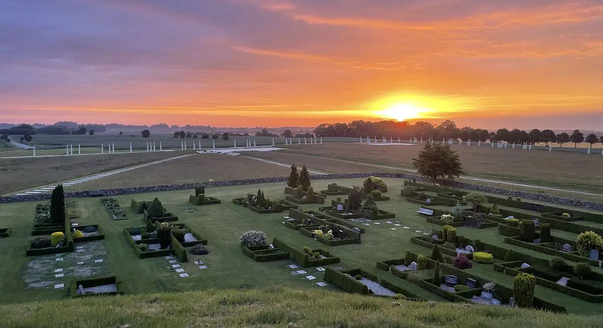

Jelling


Beide Runensteine vor 28.04.09

Runenstein 2022 Tour de France / Foto 1 2
Jelling 1
Gorms Runenstein
Hellgrauer, feinkörniger Granit
Höhe ü. d. Erdboden: 139 cm
Höhe insgesamt : 185 cm
Größte Breite: 107 cm
Dicke ca.: 50 cm
Runenhöhe: zw. 16 - 29 cm
Runeninschrift :
Ich König Gorm, der Dänemark verbessert hat, ließ dieses Denkmal zum Gedenken an Thyra, meine Frau, errichten.


Jelling 2
Haralds Runenstein
Hellgrauer Gneis mit rötlichen Feldspatstreifen
Höhe ü. d. Erdboden: 243 cm
Breite Schriftseite: 290 cm
Tierseite: 162 cm
Christusseite: 158 cm
Runenhöhe: 14,5 - 25 cm
Runeninschrift
König Harald ließ dieses Denkmal errichten für Gorm, seinen Vater und Thyra, seine Mutter, der Harald der ganz Dänemark und Norwegen gewann und die Dänen zu Christen machte.


Foto Christusseite - Schutzbau


Jelling 3
Hellgrauer Granit
Höhe: 60 cm
Breite: 50 cm
Runenhöhe: 8 - 10 cm
Runeninschrift
...Basse hat das Denkmal geschaffen ...


78 - Jelling - Letztes Update 06.10.2025
Navidaten: 55.7568165 9.4181893 oder: Gormsgade 23, 7300 Jelling
16.08.2023
Erst die Tage habe ich diese Information im Internet entdeckt: "Durch eine größzügige Zuwendung des "A.P. Møller Fonden" von 35 Millionen DKK (ca. 4,7 Millionen Euro) im Jahr 2021werden in Jelling weitere Veränderungen bis 2024 vorgenommen. Es soll z.B. der westliche Verlauf der Palisade ebenfalls visualisiert, neue städtische Grünanlagen und Gehwege angelegt und der Verlauf des Heerweges sichtbar gemacht werden."
20.06.2023 - Meine Webseite zu Jelling muss ich endlich mal völlig überarbeiten. Die bisherigen Informationen sind zum Teil veraltet. Inzwischen habe ich aber auch über meinen 2022er Kopenhagen Studien Tripp im September unzählige Informationen bei den verschiedenen Institutionen - Königliche Bibliothek / Universität von Kopenhagen mit der "Arnamagnæanske Samling" / Nationalmuseum Kopenhagen inklusive "Antikvarisk-Topografisk Arkiv" einholen können, die es nun gilt aufzubereiten. Es wird sicherlich etliche Stunden in Anspruche nehmen, aber mal schauen was dabei rauskommt. Den zeitlichen Verlauf der Überarbeitung kann man im linken Frame über "Aktuelle Infos" abrufen.
An dieser Stelle kann man im Internet den dreisprachigen (DK/GB/D) Jelling Guiden für 2023-2024 aufrufen / herunterladen. Damit hat man eigentlich alle notwendigen Informationen zu Jelling - Die Monumente - Einkaufsmöglichkeiten - Restaurants - Übernachtungsmöglichkeiten - Ausflugsziele - Events - Museen und Sammlungen / Kunst - Sonstige Informationen.
Mein letzter Besuch war im Rahmen meiner 2022er Jütland Wikinger Tour am 17./18.06.2022, wobei ich um 04.50 Uhr, vom Nordhügel betrachtet, diesen Sonnenaufgang aufgenommen habe.

Eintrag vom 24.08.2015
Die Fotos von der Jelling-Tour 2015 habe ich nun gesichtet und eine Auswahl von immerhin 74 Fotos zusammengestellt, die ich hier aufbereitet habe.
Eintrag vom 31.01.2014 / 12.03.2014
Endlich habe ich mal die Zeit gefunden und die Fotos, die ich bei meiner letzten Dänemark-Tour in Jelling am 20./21. August 2013 gefertigt habe, in ein Fotoalbum gefasst und hier eingestellt.
Wenige Tage nach meinem Besuch, am 10. September 2013, war ihre Majestät Königin Margrethe II. von Dänemark zur Einweihung der völlig neu gestalteten Gesamtanlage in Jelling.
Wie sich Jelling doch im Laufe der Jahre verändert hat? Die ursprüngliche Ortsdurchfahrtstraße wurde für die Gestaltung der Gesamtanlage / den Verlauf der Palisade einfach aufgegeben! Mein erster Besuch in Jelling war im Sommer 1983. Aufgrund der ständig fortlaufenden Untersuchungen / Ausgrabungen in und um Jelling herum hat sich das Wissen um das Jelling "Harald Blauzahns" und auch die Landschaft seither doch enorm erweitert. Die Schiffssetzung war die größte ihrer Art weltweit und hatte eine Gesamtlänge von ca. 330 m! Der Verlauf dieser gigantischen Schiffssetzung wurde nun durch weiße Betonplatten von ca. 2 x 3 m angedeutet.
Die Gesamtanlage des ca. 12,5 ha (also: 125.000 qm) umfassenden Areals mit der Kirche und den beiden Grabhügel, den beiden Runensteinen und der riesigen Schiffsssetzung war mit einer gewaltigen Palisade umgeben, die eine Kantenlänge von ca. 360 m hatte! Die Ausgrabungen zeigten, dass die Palisadenplanken bis 1,25 m in die Erde eingegraben waren, was für die Ausgräber eine ursprüngliche Höhe über der Erdoberfläche von mindestens 3 m andeutet. Die Kantenlänge der Pfeiler lag bei ca. 30 x 15 cm.
Die Palisade wurde im Jahr 2013 durch weiße Betonpfeiler auf Betonplatten in der Landschaft angedeutet! Die insg. 316 Betonpfosten haben einen Durchmesser von je 30 cm, stehen immer paarweise zusammen und ragen 222 cm, bzw. 360 cm über der Erdoberfläche in den Himmel und stecken jeweils ca. 130 cm in der Erde! Sie wiegen jeweils 700 kg bzw. 1100 kg. Die Gesamtlänge der heute aufgestellten Palisadenreihe beträgt ca. 850 m!
In der Nordostecke der von der Palisade umzäunten Anlage fanden sich auch die Spuren von drei Häusern des Trelleborgtyps, die eine Länge von ca. 30 m und eine Breite von ca. 5 m aufwiesen. Deren Grundrisse wurden nun durch weiße Betonplatten in der Landschaft angedeutet (insg. 574 Betonplatten). Darauf sind auch noch die Ausgrabungsbefunde, sprich die Lage der ehemaligen Pfosten, erkennbar herausgearbeitet.
Am 12.03.14 erhielt ich auf Anfrage dieses Foto und die Erlaubnis der Vejle Kommune es auf meiner Homepage einzustellen. Darauf ist das ganze Ausmaß der neu angelegten Palisade / Schiffssetzung und der drei Hausgrundrisse einfacher zu verstehen. Danke auch noch einmal an dieser Stelle an Frau Camilla Jørgensen. - Ergänzung: 28.06.2023: Die Palisade wurde im nordöstlichen Ende/Eck inzwischen aber nochmals deutlich erweitert und Fotos aus der Luft sind bei "Google-Maps" aktuell.

Jelling bleibt spannend! Aber schaut doch selbst... =====>
Eintrag vom 11.12.2011
Am Sonntag, 04.12.2011, war die offizielle Einweihung der neu errichteten Überdachung, um die beiden Runensteine in der Zukunft vor Witterungs- und Umwelteinflüssen sicher zu schützen.
Viele Informationen dazu (dänischer Text / teilweise auch in englisch) und etliche Fotos der einzelnen Bauabschnitte finden sich hier.
Über diesen Link kann man sich das neue Buch (dänisch/englisch) von Steen Hvass "JELLING-MONUMENTERNE deres historie og bevaring" kostenlos downloaden. Darin finden sich auch viele Informationen / Bilder zu der neuen Überdachung.
Dem - wie ich finde sehr gelungenen - Schutzbau ging ein Architekturwettbewerb voraus. Die Chronologie, die einzelnen Entwürfe mit Fotos, Zeichnungen und sonstigen Details (in dänisch) kann man sich hier downloaden.
In Youtube kann man sich mehrere Filme zur Einweihung anschauen - beispielsweise den hier.
Seit geraumer Zeit werden in Jelling auch neue Ausgrabungen / Untersuchungen / Planungen vorgenommen. Über diese Homepage werden alle Informationen, Bilder, Videos, Berichte usw. eingestellt.
In
Jelling, dicht bei der Kirche, befindet sich das
eindrucksvollste archäologische Zeugnis skandinavischer Königsmacht. Zwischen
zwei großen Grabhügeln, den größten in Dänemark, stehen die
beiden berühmten
Runensteine. Deren Urheber, zwei Könige der Wikingerzeit,
Die beiden Grabhügel, die Kirche und die Runensteine wurden 1994 von der UNESCO in die "World Heritage List" für besonders bewahrungswürdige Natur- und Kulturwerte aufgenommen. In Dänemark ist dies bisher nur dem Dom in Roskilde (1995) wiederfahren.
Ganz aktuell wurde bei der 24. jährlichen Sitzung am 30.11.2000 nun als drittes dänisches Objekt noch Schloss Kronborg bei Helsingør, nördlich von Kopenhagen, aufgenommen. Es wird als das schönste Renaissanceschloss des Nordens betrachtet.
Bislang gab es in Jelling nur innerhalb des Touristbüros eine sehr kleine Ausstellung, die sich mit der gesamten Thematik beschäftigt hat. Am 3. Dezember 2000 fand die Eröffnung des neuen Museums, direkt gegenüber den Monumenten, statt. Die Web-Adresse lautet "http://www.kongernesjelling.dk/".

| Museum: | Kongernes Jelling |
| Gormsgade 23 | |
| 7300 Jelling |
| Eintritt: | frei |
Im linken Fenster sind die verschiedenen Textpassagen zu den einzelnen Themen (Nordhügel, Südhügel, Kirche, Gorms Runenstein, Haralds Runenstein) einzeln anwählbar.
Auf der entsprechenden Website des Dänischen Nationalmuseums wurde ich zuerst auf ein neues groß angelegtes Projekt "Jelling-Projekt - ein königliches Denkmal in der dänischen und der Europäischen Beleuchtung" aufmerksam. Hierfür wurden vom "Bikubenfonden" großzügigerweise insgesamt 23,3 Millionen dänische Kronen zur Verfügung gestellt (umgerechnet ca. 3.128.133 ). Die verschiedenen Untersuchungen sind zunächst für die Jahre 2008 bis 2011 angesetzt.
Eine der ersten
Untersuchungen innerhalb des Projektes fand im September 2008
statt. Mit Metalldetektoren wurde die nähere Umgebung der
Jellingmonumente
untersucht. Dabei fand sich eine Münze, ein so genannter
Otto-Adelheid-
Des Weiteren fand im Oktober 2008 durch Tatiana Smékalová aus dem "Center for Black Sea Studies" an der Universität von Aarhus ein Magnetometer-Analyse der Region nördlich des Nordhügels statt. Dadurch fanden sich Bestätigungen zu der bereits entdeckten Palisade (siehe unten) und einige größere Steine der vermuteten Schiffssetzung.
Ein weiteres Ziel der anstehenden Untersuchungen ist die Erstellung eines 3D-Modells der Landschaft und Denkmäler, die einen Eindruck von Jelling vermitteln soll, wie die Gegend zur Zeit Harald Blauzahns ausgesehen hat.
Die beiden Runensteine in Jelling wurden innerhalb des Projektes in der jüngsten Vergangenheit mit den modernsten wissenschaftlichen Methoden genauestens untersucht. Das Untersuchungsergebnis und eine Beilage dazu (Leider online nicht mehr verfügbar), weisen aus, dass man sich größte Sorgen um deren Erhaltungszustand macht. Ursache sind vor allem die Witterungs- und Umwelteinflüsse, die auf die beiden Runensteine seit Jahrhunderten einwirken.
Verschiedene Maßnahmen sollen deshalb zur Sicherung der Weltkulturgüter der UNESCO ergriffen werden. So wurde am 27. und 28.04.2009 die rechts vom Kircheneingang und nur ca. 5 Meter von den beiden Runensteinen befindliche alte Linde gefällt. Der Baum und seine Blätter wurden als primäre Quelle der Verschlechterung des Erhaltungszustandes der Steine ausgemacht, da darüber zusätzliche Mengen Regens auf die Steine niedergehen. Durch die Baumfällaktion verspricht man sich eine Reduzierung des Niederschlags auf die Runensteine um etwa 2/3. Die große Wurzel der Linde wurde im Boden belassen, um die archäologischen Schichten nicht zu zerstören, der Baumstumpf aber bis kurz unter die Erdoberfläche abgefräst.
Im Rahmen meiner Recherchen zu dem Jelling-Projekt fand ich auch überraschende Ergebnisse aus bereits länger zurückliegenden Untersuchungen, von denen ich bislang noch nichts gehört hatte. So fanden sich Spuren einer kräftigen Palisadeneinzäunung mit riesigen Ausmaßen, die die gesamten Jellingmonumente umfasst. Die bereits angenommene Schiffssetzung erweist sich inzwischen als offenbar weltweit größte Schiffssetzung mit einer Länge von ca. 350 m und sie bestand wohl aus ca. 370 großen Steinen. Die nördliche Spitze der Schiffssetzung und daraus 7 große Steine fanden sich bereits im Oktober 2006, nachdem die Gegend mit Erdradar untersucht worden war. Die südliche Spitze der Schiffssetzung liegt demnach etwas außerhalb des Südhügels und hat den Nordhügel in ihrer Mitte. Die Nordspitze der Schiffssetzung liegt von daher nur wenige Meter südlich der nördlichen Palisade und fast 200 m von der Grabkammer im Nordhügel entfernt!